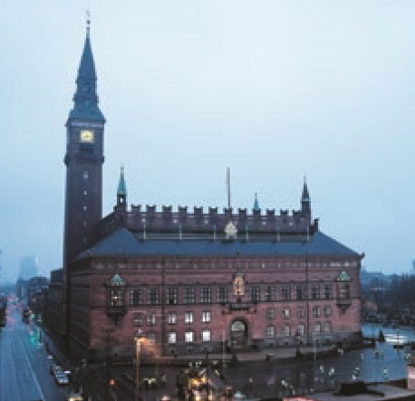
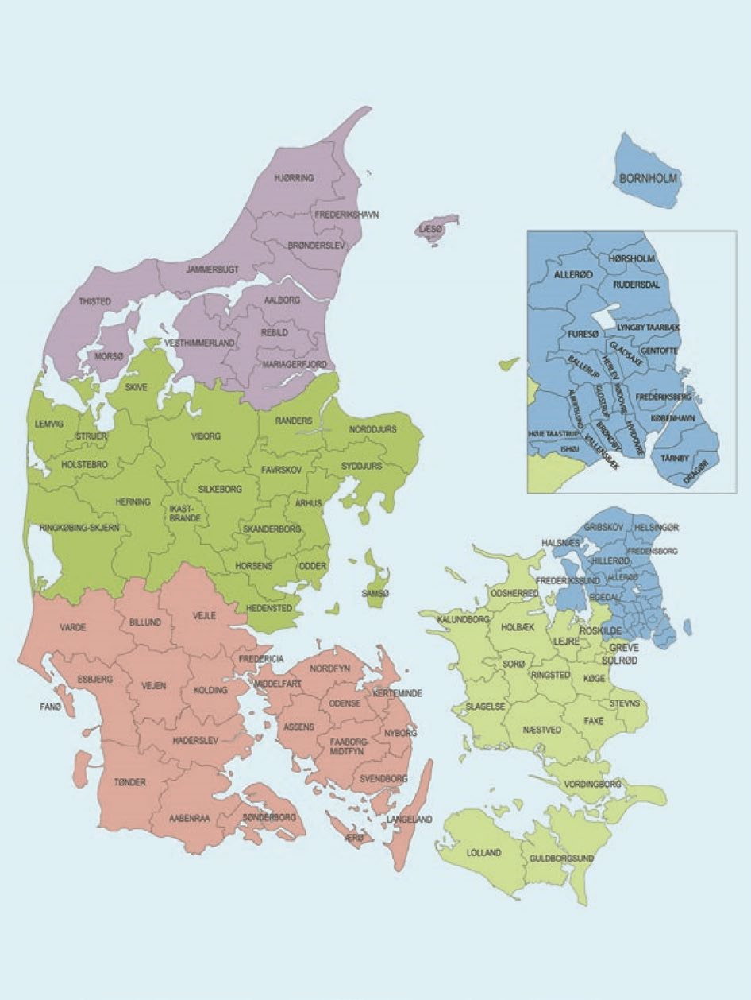
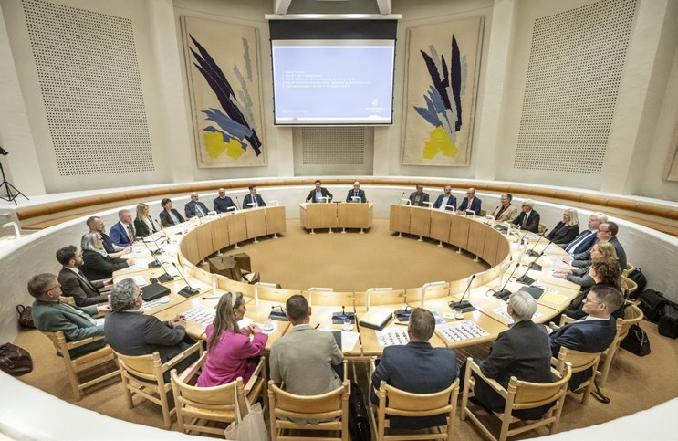
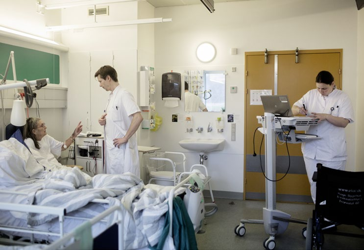

Fakta-ark 14: Det lokale
Áudio
sidde 76
Fakta-ark 14: Det lokale selvstyre
Læremateriale Til Medborgerskabsprøven

sidde 77
Der er en lang tradition for lokalt selvstyre i Danmark. Det er kommunalbesty relserne og regionsrådene, der står for det lokale selvstyre. Det er tanken med det lokale selvstyre, at de offentlige opgaver, der har med borgernes dagligdag at gøre, skal løses så tæt på borgerne som muligt.
Læremateriale Til Medborgerskabsprøven Fakta-Ark 14: Det Lokale Selvstyre
Når en borger skal i kontakt med det offentlige, henvender han eller hun sig ofte til kommunens borgerservice. Her kan man få svar på spørgsmål, hvis man fx skal flytte eller have pension. Og man kan som regel få ordnet praktiske ting, fx hvis man skal have pas eller kørekort.
Kommuner og regioner styres af folkevalgte forsamlinger. I kommunerne hedder det kommunalbestyrelser, og i regionerne hedder det regionsråd. Der er valg til kommuner og regionsråd på samme tid. Det foregår hvert fjerde år (2017, 2021, 2025 osv.).
Dette fakta-ark handler om: • Det lokale selvstyre • Kommunerne • Regionerne
Kommunerne
Der er 98 kommuner i Danmark. De har meget forskellige størrelser. Det gælder både, hvad angår befolk ningstal, og hvad angår areal.
Kommunerne har ansvaret for de fleste af de velfærdsydelser*, som borgerne har mulighed for at få, og står for driften af fx de offentlige børnehaver, vuggestuer og folke skoler. Man melder fx sit barn i børnehave, vuggestue og folkeskole hos kommunen. Kommunerne har også vigtige opgaver i forbindelse med fx beskæftigelse, integration, veje, afhentning af affald, miljø samt fritids- og kulturtilbud.
Desuden har kommunerne ansvaret for en række sociale ydelser og tilbud som fx hjælp til ældre borgere, der har svært ved at klare sig selv, samt hjælp til mennesker med handicap eller visse former for psykisk sygdom. Hos kommu nens borgerservice kan man få at vide, hvor man skal henvende sig i forbindelse med forskellige spørgsmål.Københavns Rådhus.
Københavns Rådhus.
Kommuner i Danmark. Region Hovedstaden: Albertslund, Allerød, Ballerup, Bornholm, Brøndby, Dragør, Egedal, Fredensborg, Frederiksberg, Frederikssund, Furesø, Gentofte, Gladsaxe, Glostrup, Gribskov, Halsnæs, Helsingør, Herlev, Hillerød, Hvidovre, Høje-Taastrup, Hørsholm, Ishøj, København, Lyngby-Taarbæk, Rudersdal, Rødovre, Tårnby, Vallensbæk. Region Sjælland: Faxe, Greve, Guldborgsund, Holbæk, Kalundborg, Køge, Lejre, Lolland, Næstved, Odsherred, Ringsted, Roskilde, Slagelse, Solrød, Sorø, Stevns, Vordingborg. Region Syddanmark: Assens, Billund, Esbjerg, Fanø, Fredericia, Faaborg-Midtfyn, Haderslev, Kerteminde, Kolding, Langeland, Middelfart, Nordfyns, Nyborg, Odense, Svendborg, Sønderborg, Tønder, Varde, Vejen, Vejle, Ærø, Aabenraa. Region Midtjylland: Favrskov, Hedensted, Herning, Holstebro, Horsens, Ikast-Brande, Lemvig, Norddjurs, Odder, Randers, Ringkøbing-Skjern, Samsø, Silkeborg, Skanderborg, Skive, Struer, Syddjurs, Viborg, Aarhus. Region Nordjylland: Brønderslev, Frederikshavn, Hjørring, Jammerbugt, Læsø, Mariagerfjord, Morsø, Rebild, Thisted, Vesthimmerlands, Aalborg.

sidde 78
Læremateriale Til Medborgerskabsprøven Fakta-Ark 14: Det Lokale Selvstyre
Kommuner i Danmark.
Det er folkevalgte kommunalbestyrelser, som leder landets kommuner. Formanden for kommunalbestyrelsen kaldes borgmesteren (i København: over borgmesteren). Borgmesteren er den øverste leder af kommunens forvaltning. Borgmesteren vælges af den nyvalgte kommunalbestyrelse.Møde i kommunalbestyrelsen i Holstebro Kommune i Vest-Jylland. Fo

sidde 79
Læremateriale Til Medborgerskabsprøven Fakta-Ark 14: Det Lokale Selvstyre
Møde i kommunalbestyrelsen i Holstebro Kommune i Vest-Jylland. Foto: Morten Stricker/Ritzau Scanpix.
Kommunalbestyrelsen bestemmer selv inden for nogle bestemte rammer, hvor mange medlemmer der skal være i kommunalbestyrelsen. Der er mellem 19 og 31 medlemmer af kommunalbestyrelsen afhængigt af, hvad kommunalbesty relsen har besluttet. I de mindste kommuner er der dog ned til ni medlemmer og i København op til 55 medlemmer. Det skal være et ulige antal medlemmer af kommunalbestyrelsen.
Hvert år laver regeringen en aftale med kommunernes interesseorganisation KL (Kommunernes Landsforening) om, hvor mange penge kommunerne tilsammen må bruge. Dermed kan regeringen påvirke den samlede kommunale økonomi. Kommunerne aftaler herefter indbyrdes, hvordan beløbet fordeles til de enkelte kommuner.
Den enkelte kommunalbestyrelse beslutter herefter, hvor mange penge der skal bruges til de velfærdsydelser, som kommunalbestyrelsen har ansvaret for. Fx kan kommunalbestyrelsen bestemme, hvor mange vuggestuer, børnehaver og folkeskoler der skal være i kommunen.
Kommunerne har ret til at udskrive* skatter. Dermed er de selv med til at skaffe en del af pengene til at løse deres opgaver. Staten giver også penge til kommu nerne efter nogle særlige regler. De 98 kommuner har en interesseorganisation, der hedder Kommunernes Landsforening (KL).

sidde 80
Regionerne
Læremateriale Til Medborgerskabsprøven Fakta-Ark 14: Det Lokale Selvstyre
Danmark er opdelt i fem regioner. Det er:
- Region Hovedstaden (København og omegn, Nordsjælland og Bornholm)
- Region Sjælland (Vestsjælland, Midtsjælland, Sydsjælland og Lolland-Falster)
- Region Syddanmark (Fyn samt Syd- og Sønderjylland)
- Region Midtjylland (Øst-, Midt- og Vestjylland)
- Region Nordjylland (Nordjylland)
Regionerne har ikke ret til at udskrive skatter, men får deres penge direkte fra staten. Hver region ledes af et regionsråd med en regionsrådsformand i spidsen. Der er valg til regionsrådene hvert fjerde år. Mange af de partier, der stiller op til regionsrådsvalget, stiller også op til Folketinget. Regionsrådsformanden vælges af regionsrådet. Regionsrådene har hver mellem 25 og 47 medlemmer. Regio nerne har en interesseorganisation, der hedder Danske Regioner.Patient bliver tilset af læge og sygeplejerske på regionens sygehu
Region Hovedstaden og Region Sjælland bliver lagt sammen den 1. januar 2027. Den nye, sammenlagte region skal hedde Region Østdanmark.
Regionerne har bl.a. ansvar for sundhedsområdet.
Det er regionerne, der driver* de offentlige sygehuse.
Patient bliver tilset af læge og sygeplejerske på regionens sygehus i Køge. Foto: Tor Birk Trads/Ritzau Scanpix.
Fonte: Læremateriale til Medborgerskabsprøven, SIRI.